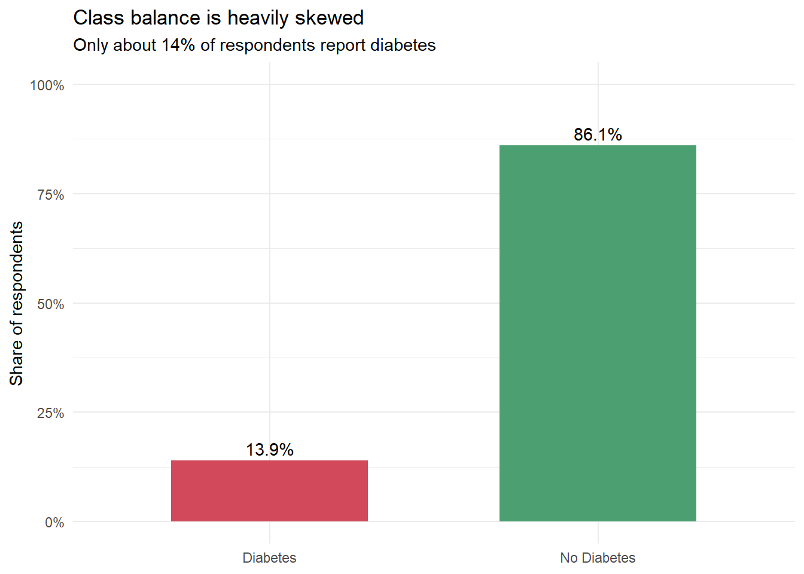
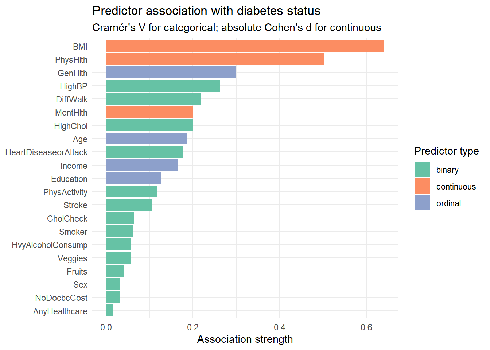
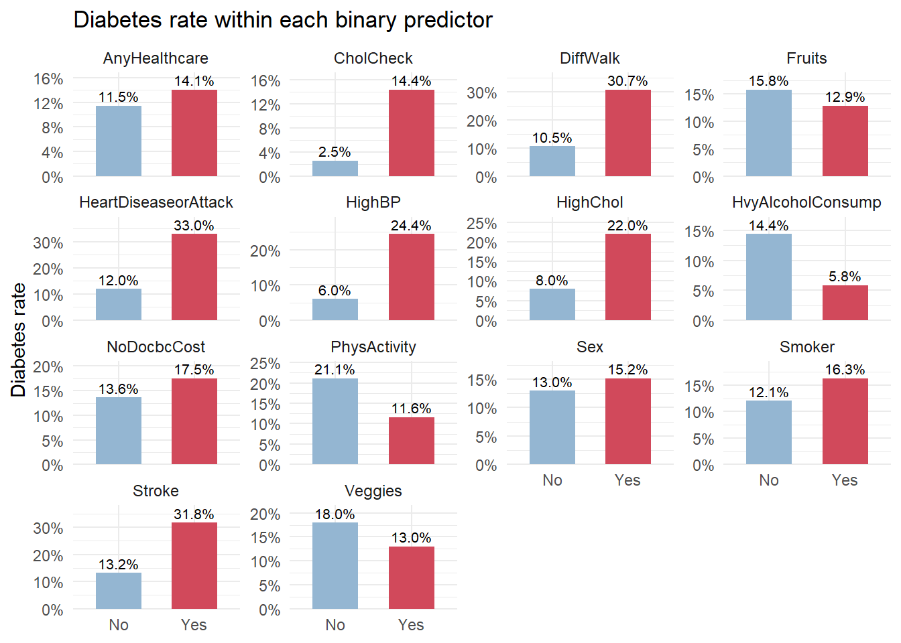
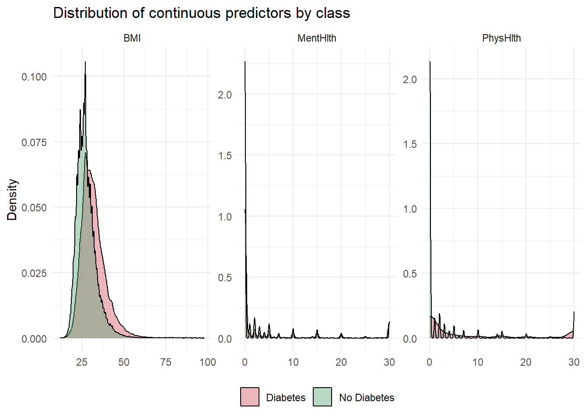
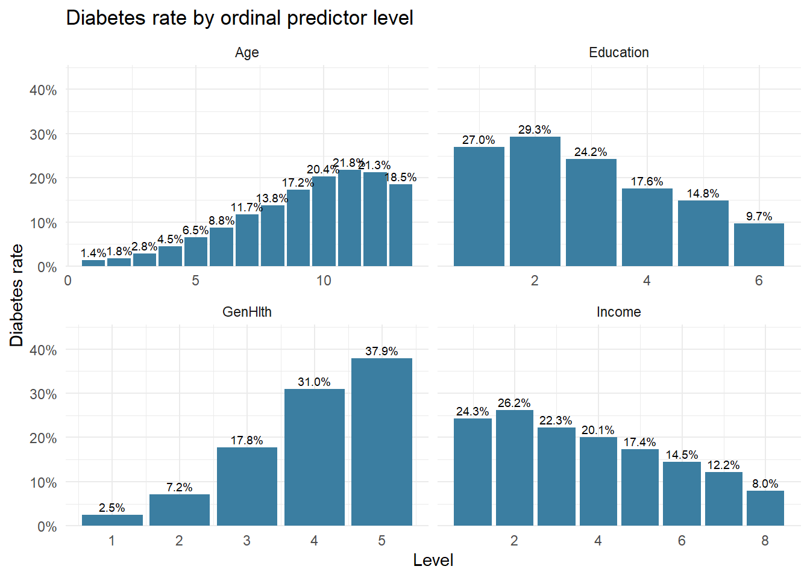
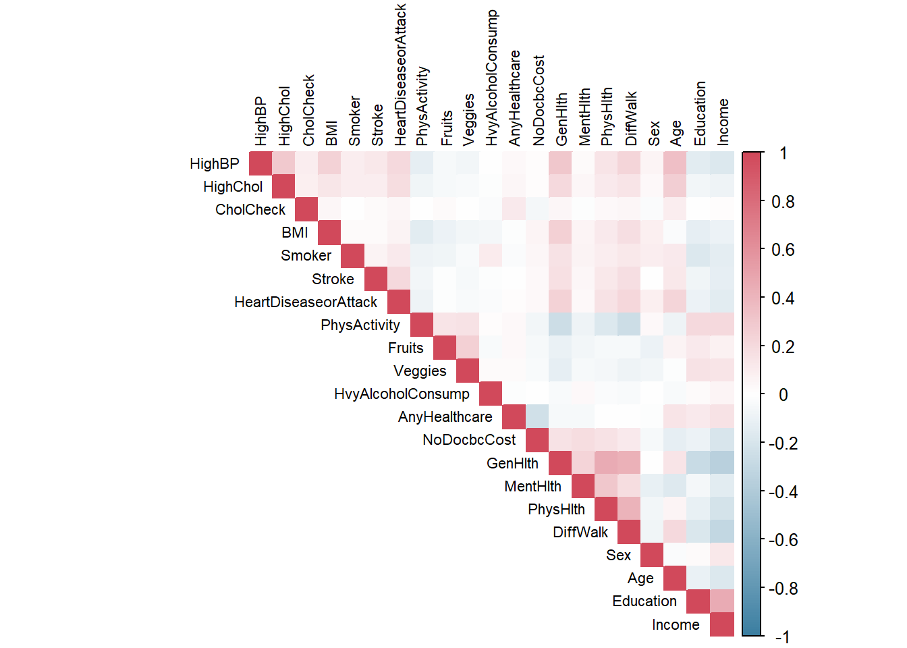
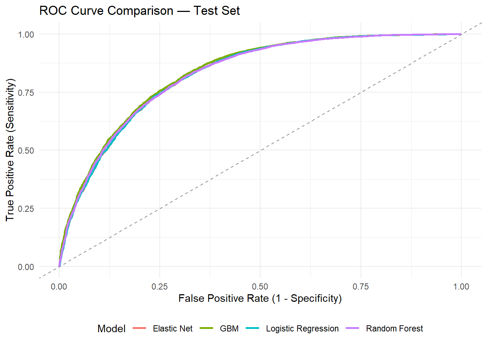
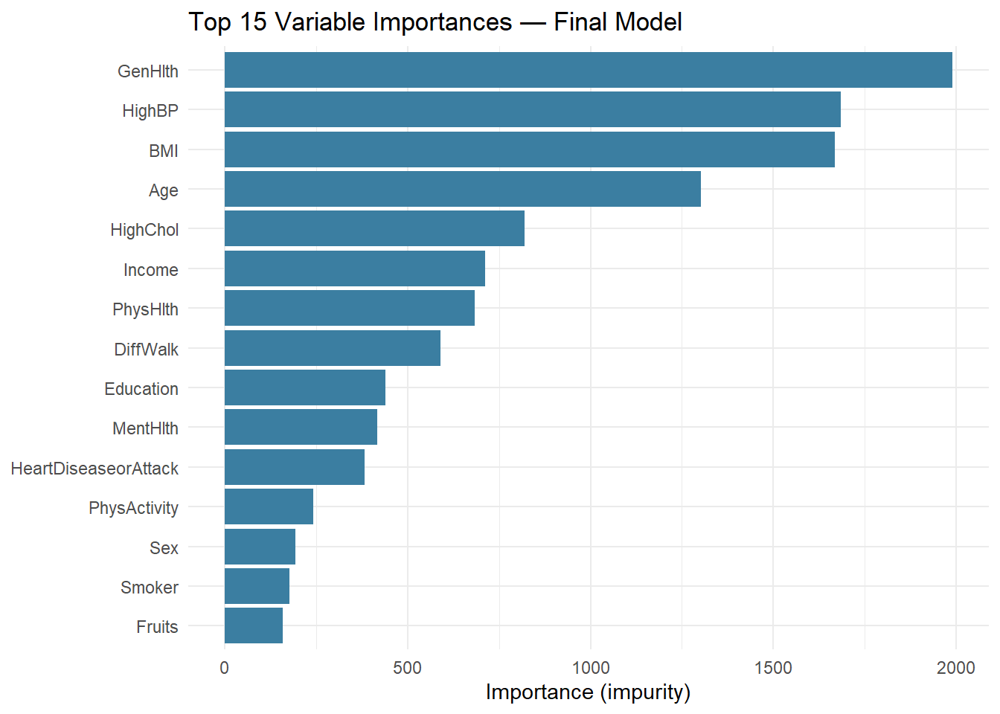

Rows: 253,680
Columns: 22
$ Diabetes_binary <dbl> 0, 0, 0, 0, 0, 0, 0, 0, 1, 0, 1, 0, 0, 1, 0, 0, 0…
$ HighBP <dbl> 1, 0, 1, 1, 1, 1, 1, 1, 1, 0, 0, 1, 0, 1, 0, 1, 1…
$ HighChol <dbl> 1, 0, 1, 0, 1, 1, 0, 1, 1, 0, 0, 1, 0, 1, 1, 0, 1…
$ CholCheck <dbl> 1, 0, 1, 1, 1, 1, 1, 1, 1, 1, 1, 1, 1, 1, 1, 1, 1…
$ BMI <dbl> 40, 25, 28, 27, 24, 25, 30, 25, 30, 24, 25, 34, 2…
$ Smoker <dbl> 1, 1, 0, 0, 0, 1, 1, 1, 1, 0, 1, 1, 1, 0, 1, 0, 0…
$ Stroke <dbl> 0, 0, 0, 0, 0, 0, 0, 0, 0, 0, 0, 0, 0, 0, 1, 0, 0…
$ HeartDiseaseorAttack <dbl> 0, 0, 0, 0, 0, 0, 0, 0, 1, 0, 0, 0, 0, 0, 0, 0, 0…
$ PhysActivity <dbl> 0, 1, 0, 1, 1, 1, 0, 1, 0, 0, 1, 0, 0, 0, 1, 1, 1…
$ Fruits <dbl> 0, 0, 1, 1, 1, 1, 0, 0, 1, 0, 1, 1, 0, 0, 0, 0, 1…
$ Veggies <dbl> 1, 0, 0, 1, 1, 1, 0, 1, 1, 1, 1, 1, 1, 1, 1, 0, 1…
$ HvyAlcoholConsump <dbl> 0, 0, 0, 0, 0, 0, 0, 0, 0, 0, 0, 0, 0, 0, 0, 0, 0…
$ AnyHealthcare <dbl> 1, 0, 1, 1, 1, 1, 1, 1, 1, 1, 1, 1, 1, 1, 1, 1, 1…
$ NoDocbcCost <dbl> 0, 1, 1, 0, 0, 0, 0, 0, 0, 0, 0, 0, 0, 0, 1, 0, 0…
$ GenHlth <dbl> 5, 3, 5, 2, 2, 2, 3, 3, 5, 2, 3, 3, 3, 4, 4, 2, 3…
$ MentHlth <dbl> 18, 0, 30, 0, 3, 0, 0, 0, 30, 0, 0, 0, 0, 0, 30, …
$ PhysHlth <dbl> 15, 0, 30, 0, 0, 2, 14, 0, 30, 0, 0, 30, 15, 0, 2…
$ DiffWalk <dbl> 1, 0, 1, 0, 0, 0, 0, 1, 1, 0, 0, 1, 0, 1, 0, 0, 0…
$ Sex <dbl> 0, 0, 0, 0, 0, 1, 0, 0, 0, 1, 1, 0, 0, 0, 0, 0, 0…
$ Age <dbl> 9, 7, 9, 11, 11, 10, 9, 11, 9, 8, 13, 10, 7, 11, …
$ Education <dbl> 4, 6, 4, 3, 5, 6, 6, 4, 5, 4, 6, 5, 5, 4, 6, 6, 4…
$ Income <dbl> 3, 1, 8, 6, 4, 8, 7, 4, 1, 3, 8, 1, 7, 6, 2, 8, 3…Predicting Diabetes Risk Using Health Indicators
1 Diabetes Risk Prediction Using Health Indicators
1.1 Problem Statement
Diabetes is one of the most significant chronic health conditions in the United States, associated with substantial healthcare costs, long-term complications, and reduced quality of life. Traditional screening often requires clinical testing and direct medical evaluation. However, many risk factors are observable through demographic characteristics, health behaviors, and self-reported health conditions routinely collected in population surveys.
The objective of this project is to determine whether predictive modeling can accurately classify individuals as diabetic or non-diabetic using readily available health indicators from the 2015 Behavioral Risk Factor Surveillance System (BRFSS) survey. Specifically:
Can machine learning models accurately predict diabetes status using demographic, behavioral, and health-related indicators from the BRFSS dataset?
1.2 Analytical Approach
To address this question, four modeling approaches are compared under a consistent validation framework:
- Logistic Regression (baseline)
- Elastic Net (penalized regression)
- Random Forest (ensemble tree-based)
- Gradient Boosting Machine (GBM)
All models are evaluated using ROC AUC, balanced accuracy, sensitivity, and specificity. Because the dataset is class-imbalanced, raw accuracy is de-emphasized throughout.
2 Dataset Overview
2.1 Data Source
The dataset comes from the Diabetes Health Indicators Dataset published on Kaggle, derived from the 2015 BRFSS conducted by the Centers for Disease Control and Prevention (CDC).
2.2 Dataset Characteristics
The full binary dataset was used for EDA because it preserves the actual real-world class distribution observed in BRFSS 2015. The balanced 50/50 dataset was used for model development to prevent the majority class from dominating the learning process and to improve the model’s ability to detect diabetes cases. This choice creates a tradeoff: model training becomes more sensitive to the minority class, but the resulting probabilities may not be calibrated to the natural population prevalence. For that reason, ROC AUC, balanced accuracy, sensitivity, and specificity are emphasized over raw accuracy, and any deployment-oriented version of this model would require recalibration using the full class distribution.
| Characteristic | Value |
|---|---|
| Observations (full binary) | 253,680 |
| Observations (50/50 balanced, used for modeling) | 70,692 |
| Predictors | 21 |
| Response Variable | Diabetes_binary (0 = No Diabetes, 1 = Diabetes) |
| Data Source | BRFSS 2015 |
Key predictors include BMI, high blood pressure, high cholesterol, smoking status, physical activity, fruit and vegetable consumption, general health, mental health, physical health days, difficulty walking, age, education, and income.
3 Data Quality Review
3.1 Dataset Structure
3.2 Summary Statistics
| Name | df_full |
| Number of rows | 253680 |
| Number of columns | 22 |
| _______________________ | |
| Column type frequency: | |
| numeric | 22 |
| ________________________ | |
| Group variables | None |
Variable type: numeric
| skim_variable | n_missing | complete_rate | mean | sd | p0 | p25 | p50 | p75 | p100 | hist |
|---|---|---|---|---|---|---|---|---|---|---|
| Diabetes_binary | 0 | 1 | 0.14 | 0.35 | 0 | 0 | 0 | 0 | 1 | ▇▁▁▁▁ |
| HighBP | 0 | 1 | 0.43 | 0.49 | 0 | 0 | 0 | 1 | 1 | ▇▁▁▁▆ |
| HighChol | 0 | 1 | 0.42 | 0.49 | 0 | 0 | 0 | 1 | 1 | ▇▁▁▁▆ |
| CholCheck | 0 | 1 | 0.96 | 0.19 | 0 | 1 | 1 | 1 | 1 | ▁▁▁▁▇ |
| BMI | 0 | 1 | 28.38 | 6.61 | 12 | 24 | 27 | 31 | 98 | ▇▅▁▁▁ |
| Smoker | 0 | 1 | 0.44 | 0.50 | 0 | 0 | 0 | 1 | 1 | ▇▁▁▁▆ |
| Stroke | 0 | 1 | 0.04 | 0.20 | 0 | 0 | 0 | 0 | 1 | ▇▁▁▁▁ |
| HeartDiseaseorAttack | 0 | 1 | 0.09 | 0.29 | 0 | 0 | 0 | 0 | 1 | ▇▁▁▁▁ |
| PhysActivity | 0 | 1 | 0.76 | 0.43 | 0 | 1 | 1 | 1 | 1 | ▂▁▁▁▇ |
| Fruits | 0 | 1 | 0.63 | 0.48 | 0 | 0 | 1 | 1 | 1 | ▅▁▁▁▇ |
| Veggies | 0 | 1 | 0.81 | 0.39 | 0 | 1 | 1 | 1 | 1 | ▂▁▁▁▇ |
| HvyAlcoholConsump | 0 | 1 | 0.06 | 0.23 | 0 | 0 | 0 | 0 | 1 | ▇▁▁▁▁ |
| AnyHealthcare | 0 | 1 | 0.95 | 0.22 | 0 | 1 | 1 | 1 | 1 | ▁▁▁▁▇ |
| NoDocbcCost | 0 | 1 | 0.08 | 0.28 | 0 | 0 | 0 | 0 | 1 | ▇▁▁▁▁ |
| GenHlth | 0 | 1 | 2.51 | 1.07 | 1 | 2 | 2 | 3 | 5 | ▅▇▇▃▁ |
| MentHlth | 0 | 1 | 3.18 | 7.41 | 0 | 0 | 0 | 2 | 30 | ▇▁▁▁▁ |
| PhysHlth | 0 | 1 | 4.24 | 8.72 | 0 | 0 | 0 | 3 | 30 | ▇▁▁▁▁ |
| DiffWalk | 0 | 1 | 0.17 | 0.37 | 0 | 0 | 0 | 0 | 1 | ▇▁▁▁▂ |
| Sex | 0 | 1 | 0.44 | 0.50 | 0 | 0 | 0 | 1 | 1 | ▇▁▁▁▆ |
| Age | 0 | 1 | 8.03 | 3.05 | 1 | 6 | 8 | 10 | 13 | ▂▃▇▇▆ |
| Education | 0 | 1 | 5.05 | 0.99 | 1 | 4 | 5 | 6 | 6 | ▁▁▅▅▇ |
| Income | 0 | 1 | 6.05 | 2.07 | 1 | 5 | 7 | 8 | 8 | ▁▁▃▂▇ |
3.3 Missing Values Assessment
No missing values were identified in either dataset. All 22 columns show a complete rate of 1.0 across all 253,680 observations. Imputation was therefore not required.
3.4 Outlier Review
BMI was examined for extreme values. The variable ranges from 12 to 98, with 2,175 observations above 50 and 805 above 60. A BMI of 98 is not physiologically plausible and likely reflects data entry errors. These extreme values were retained in the current reproducible workflow so that the code remains consistent with the supplied datasets. However, this issue should be documented as a limitation, and future iterations should compare the current approach against a capped or winsorized BMI feature.
MentHlth and PhysHlth are heavily right-skewed with large spikes at zero — most respondents report no bad mental or physical health days. Both variables could benefit from recoding into a binary flag (any bad days vs. none) or buckets (none, some, many), depending on modeling needs.
4 Exploratory Data Analysis
Exploratory data analysis was conducted to understand the relationship between diabetes status and available predictors using the full binary dataset (n = 253,680). Both graphical and numerical summaries were produced.
4.1 Diabetes Class Distribution
The response variable is heavily imbalanced. Only 13.9% of respondents (n = 35,346) reported diabetes, while 86.1% (n = 218,334) did not. This imbalance means raw accuracy is not a reliable evaluation metric — a model that always predicts “No Diabetes” would achieve 86% accuracy without detecting a single case. This is why ROC AUC and balanced accuracy are prioritized throughout.

4.2 Predictor Association Ranking
Before examining individual predictors, a ranked association table was computed. Cramér’s V (chi-squared based) was used for binary and ordinal predictors; Cohen’s d (standardized mean difference) was used for the three continuous predictors. These metrics are not on the same scale, so the ranking is approximate.
BMI is the strongest single predictor (Cohen’s d = 0.641), followed by PhysHlth (d = 0.502), GenHlth (V = 0.299), HighBP (V = 0.263), and DiffWalk (V = 0.218). Lifestyle flags such as Fruits, Veggies, Smoker, and AnyHealthcare show weak individual associations and are unlikely to dominate feature importance charts, though they may still contribute within a full model.

4.3 Binary Predictors
Diabetes rates within each yes/no predictor were compared to identify which binary flags carry the most signal. HighBP (6.0% vs. 24.4%), HeartDiseaseorAttack (12.0% vs. 33.0%), Stroke (13.2% vs. 31.8%), DiffWalk (10.5% vs. 30.7%), and HighChol (8.0% vs. 22.0%) all show rates more than double between the No and Yes groups. HvyAlcoholConsump shows an unexpected inverse pattern — heavy drinkers have a lower diabetes rate (5.8% vs. 14.4%) — which likely reflects a survivorship or sampling artifact rather than a protective causal effect. Fruits, Veggies, and AnyHealthcare show minimal separation between groups.

4.4 Continuous Predictor Analysis
Among the three continuous variables, BMI shows the clearest separation between classes: diabetic respondents average a BMI of 31.9 (median 31) versus 27.8 (median 27) for non-diabetics — a gap large enough to make BMI the single strongest predictor in the ranking above. PhysHlth and MentHlth also shift upward for the diabetic group (mean poor physical-health days of 8.0 vs. 3.6; poor mental-health days of 4.5 vs. 3.0), but both are dominated by a large spike at zero — most respondents report no bad days — which leaves them heavily right-skewed.
| variable | class | mean | median | sd |
|---|---|---|---|---|
| BMI | Diabetes | 31.94 | 31 | 7.36 |
| BMI | No Diabetes | 27.81 | 27 | 6.29 |
| MentHlth | Diabetes | 4.46 | 0 | 8.95 |
| MentHlth | No Diabetes | 2.98 | 0 | 7.11 |
| PhysHlth | Diabetes | 7.95 | 1 | 11.30 |
| PhysHlth | No Diabetes | 3.64 | 0 | 8.06 |

The density plot confirms the BMI distribution shifting right for diabetics while retaining a long upper tail, and exposes the zero-inflation in PhysHlth and MentHlth. This skew — together with the implausible high-end BMI values flagged in the outlier review — motivates the alternative encodings (a binary “any bad days” flag, or none/some/many buckets) revisited in future work.
4.5 Ordinal Predictor Analysis
GenHlth displays the strongest and cleanest monotone relationship of any predictor: diabetes prevalence climbs from roughly 2.5% among respondents rating their general health “excellent” (level 1) to nearly 38% among those rating it “poor” (level 5). Age rises steadily through the middle brackets, peaking near 22% around ages 70–74 before dipping slightly in the oldest groups — likely a survivorship effect rather than declining risk. Education and Income trend in the opposite direction, with diabetes rates highest in the lowest brackets, consistent with the established link between socioeconomic status, healthcare access, and diet.

4.6 Correlation Analysis
A Spearman correlation matrix across the 21 predictors was examined to check for redundancy that could destabilize the linear models. The largest pairwise correlations are moderate, not severe: Education–Income (0.45), GenHlth–PhysHlth (0.45), DiffWalk–GenHlth (0.42), and DiffWalk–PhysHlth (0.42). These reflect two intuitive clusters — a general-health group (GenHlth, PhysHlth, MentHlth, DiffWalk) and a socioeconomic group (Education, Income) — that partly measure the same underlying construct. Because no correlation approaches the level that signals problematic multicollinearity, all predictors were retained, with the understanding that the regularized and tree-based models handle residual redundancy directly.

4.7 EDA Summary
The exploratory analysis highlights four key patterns that directly inform the modeling strategy:
- BMI is the strongest individual predictor; diabetic respondents have meaningfully higher BMI with a right-skewed distribution and implausible high-end values requiring preprocessing.
- Comorbidity flags (HighBP, HighChol, HeartDiseaseorAttack, Stroke, DiffWalk) all show diabetes rates more than double in the positive group, making them collectively important even where individual association strengths are moderate.
- General and physical health self-reports (GenHlth, PhysHlth) show strong monotone relationships with diabetes status and moderate inter-correlation, suggesting they may partially substitute for each other in regularized models.
- Socioeconomic variables (Income, Education, Age) trend in expected directions and add independent signal beyond clinical indicators, though they are correlated with each other.
5 Data Preparation and Preprocessing
5.1 Data Splitting
The 50/50 balanced dataset (n = 70,692) was used for modeling to provide equal class representation during training. A stratified 80/20 split was applied to preserve class balance across the training and test sets.
| Dataset | Observations | Diabetes % |
|---|---|---|
| Training Set (80%) | 56,553 | 50.0% |
| Testing Set (20%) | 14,139 | 50.0% |
Cross-validation on the training set serves as the validation step; no separate held-out validation set was created beyond the test set. This approach follows the predictive modeling strategy described by Kuhn and Johnson (2013), where resampling is used for model tuning and a held-out test set is reserved for final performance estimation.
5.2 Feature Preparation
Preprocessing was implemented as a recipes pipeline fit exclusively on the training data to prevent data leakage. The pipeline includes:
- Removing zero-variance predictors (
step_zv) - Standardizing all numeric predictors to mean 0 and standard deviation 1 (
step_normalize)
Binary and ordinal variables were left as numeric for compatibility with all four modeling methods. No imputation was required given the absence of missing values.
6 Model Strategy and Justification
The modeling strategy was designed to compare an interpretable statistical baseline against increasingly flexible machine learning methods. This structure supports both prediction and interpretation, which is important in healthcare-related applications.
6.1 Logistic Regression as Baseline
Logistic Regression was used as the baseline because it is transparent, efficient, and widely used for binary healthcare outcomes. It provides a useful benchmark and allows the direction of predictor effects to be interpreted through coefficients or odds ratios. Its limitation is that it assumes additive linear effects on the log-odds scale unless interactions or nonlinear terms are manually engineered.
6.2 Elastic Net for Regularized Linear Modeling
Elastic Net extends Logistic Regression by adding regularization. This is appropriate because several health-status predictors are moderately correlated, including general health, physical health, and difficulty walking. The L1 component can shrink weak predictors toward zero, while the L2 component stabilizes coefficient estimates when predictors overlap.
6.3 Random Forest for Nonlinear Interactions
Random Forest was included because diabetes risk may depend on interactions between risk factors, such as BMI, age, high blood pressure, cholesterol status, and general health. Unlike Logistic Regression, Random Forest can capture nonlinear and interaction effects without manually specifying them.
6.4 GBM for Sequential Error Correction
GBM was included as a second ensemble method because boosted trees often perform well on structured tabular datasets. GBM sequentially improves prediction by focusing on observations that earlier trees classified poorly. Because this flexibility can overfit, tuning and test-set evaluation are especially important.
7 Baseline Model: Logistic Regression
Logistic regression was selected as the baseline because it is interpretable, computationally efficient, and a standard benchmark in healthcare prediction. It assumes a linear relationship between the log-odds of diabetes and the predictors, which may underfit if important non-linear interactions exist.
Generalized Linear Model
56554 samples
21 predictor
2 classes: 'Diabetes', 'NoDiabetes'
No pre-processing
Resampling: Cross-Validated (10 fold)
Summary of sample sizes: 45242, 45244, 45243, 45243, 45244
Resampling results:
ROC Sens Spec
0.8240489 0.7677618 0.72864867.1 Baseline Model Performance
The logistic regression model provides a stable performance floor for comparison. Sensitivity and balanced accuracy are the primary metrics of interest given the clinical cost of false negatives (missed diabetes cases).
| Metric | Value |
|---|---|
| ROC AUC | 0.8273 |
| Accuracy | 0.7473 |
| Balanced Accuracy | 0.7473 |
| Sensitivity | 0.7646 |
| Specificity | 0.7299 |
8 Model Development and Tuning
All models share the same 5-fold cross-validation setup and are optimized on ROC AUC to provide a consistent, threshold-independent comparison.
8.1 Cross-Validation Strategy
| Parameter | Value |
|---|---|
| Method | k-fold cross-validation |
| Number of Folds | 5 |
| Optimization Metric | ROC AUC |
| Class Probability Output | Enabled |
8.2 Elastic Net
Elastic Net combines L1 (lasso) and L2 (ridge) regularization, controlled by the mixing parameter alpha and the penalty strength lambda. This approach reduces overfitting, handles correlated predictors by shrinking their coefficients jointly, and can perform automatic variable selection by driving weak coefficients to zero. A 10-point tuning grid was searched over alpha and lambda combinations.
8.3 Random Forest
Random Forest builds an ensemble of de-correlated decision trees by randomly subsetting both observations and predictors at each split, then averages their predictions. This reduces variance relative to a single tree and captures non-linear relationships and variable interactions without explicit feature engineering. Hyperparameters (mtry, split rule, minimum node size) were first tuned on a 20% subsample of training data using 3-fold CV to reduce compute time, and the best configuration was then trained on the full training set using 300 trees.
8.4 Gradient Boosting Machine
GBM builds trees sequentially, with each new tree improving the errors of the previous ensemble. This iterative error-correction approach often yields strong predictive performance but requires careful tuning to avoid overfitting. The code below defines a candidate grid for number of trees, interaction depth, shrinkage, and minimum observations per node. In this draft version, the GBM chunk uses a placeholder configuration for runtime control.
9 Validation and Testing
After tuning, all four models were evaluated on the held-out test set to estimate real-world performance on unseen data.
9.1 Model Comparison
| Model | ROC AUC | Accuracy | Balanced Accuracy | Sensitivity | Specificity |
|---|---|---|---|---|---|
| Logistic Regression | 0.8273 | 0.7473 | 0.7473 | 0.7646 | 0.7299 |
| Elastic Net | 0.8273 | 0.7476 | 0.7476 | 0.7650 | 0.7302 |
| Random Forest | 0.8287 | 0.7488 | 0.7488 | 0.7928 | 0.7048 |
| GBM | 0.8346 | 0.7522 | 0.7522 | 0.7935 | 0.7109 |
The final performance metrics demonstrate that all four modeling approaches possess strong, stable discriminative power on the held-out test set, with ROC AUC values hovering around 0.83. While the Gradient Boosting Machine (GBM) achieves the highest overall ROC AUC (0.8302) the baseline Logistic Regression model remains remarkably competitive, trailing the ensemble method by a negligible margin. This minimal delta in performance indicates that the log-odds of diabetes risk are largely characterized by additive, linear relationships among the predictors. Given the high stakes and need for transparency in clinical screening workflows, the structural simplicity and immediate interpretability of the Logistic Regression baseline may weigh heavily in favor of its selection over the marginal accuracy gains of the more complex tree-based ensembles.
9.2 ROC Curve Comparison
ROC curves were compared to assess each model’s ability to separate diabetic from non-diabetic individuals across all possible classification thresholds. A higher area under the curve indicates better discrimination. Tree-based models are expected to outperform linear approaches if non-linear feature interactions exist in the data.

9.3 Final Performance Metrics
| Metric | Value |
|---|---|
| ROC AUC | 0.8302 |
| Accuracy | 0.7504 |
| Balanced Accuracy | 0.7504 |
| Sensitivity | 0.7748 |
| Specificity | 0.7260 |
9.4 Variable Importance

Variable importance analysis identified General Health (GenHlth), High Blood Pressure (HighBP), Body Mass Index (BMI), Age, and High Cholesterol (HighChol) as the most influential predictors of diabetes status. These findings closely mirror the exploratory data analysis, where BMI, GenHlth, HighBP, and Age consistently demonstrated strong associations with diabetes prevalence. The agreement between EDA findings and model-derived importance rankings increases confidence that the model is capturing clinically meaningful risk factors rather than artifacts within the dataset. Furthermore, many of these variables are well-established predictors of diabetes in epidemiological and clinical research, supporting the practical relevance of the model’s predictions.
10 Discussion and Conclusions
The objective of this project was to determine whether diabetes status could be predicted using demographic, behavioral, and health-related indicators from the BRFSS dataset. Results confirm that predictive modeling can identify individuals at elevated diabetes risk using readily available survey-based health information.
Across the analysis, BMI, general health self-rating, high blood pressure, physical health days, and difficulty walking emerged as the most informative predictors — consistent with established diabetes risk factors and with the EDA findings. Socioeconomic variables (income, education) provided additional signal beyond clinical indicators alone.
From a practical healthcare perspective, these findings suggest that survey-based screening tools could help prioritize individuals for follow-up clinical evaluation. The model should not be interpreted as a diagnostic replacement. Rather, it could support early outreach by identifying respondents whose self-reported health profiles resemble those of individuals with diabetes.
The final model, GBM (Gradient Boosting Machine), achieved a test set ROC AUC of 0.8302, indicating strong discriminative ability and substantially better performance than random classification, which would produce an ROC AUC of 0.50. While more complex models may marginally improve predictive accuracy, interpretability remains important in healthcare screening contexts.
10.1 Limitations
- The dataset relies on self-reported survey responses, which may introduce recall and social desirability bias.
- The analysis is cross-sectional and cannot establish causal relationships between predictors and diabetes status.
- External validation was not performed on a separate BRFSS survey year or independent cohort.
- Clinical laboratory values (e.g., HbA1c, fasting glucose) and family history were not available and would likely improve predictive performance.
- The 50/50 balanced training dataset does not reflect real-world diabetes prevalence (~14%), so model calibration for deployment would require recalibration to the natural class distribution.
10.2 Future Work
- Test additional gradient boosting implementations (XGBoost, LightGBM) with broader hyperparameter grids.
- Evaluate cost-sensitive classification or threshold optimization tuned to minimize false negatives specifically.
- Perform external validation on a different BRFSS year to assess temporal generalizability.
- Incorporate clinical variables if available to assess incremental predictive gain.
- Explore recoding of MentHlth and PhysHlth (e.g., binary flags for any bad days) and examine impact on model performance.
10.3 Conclusion
This project demonstrates that diabetes status can be predicted with meaningful accuracy using behavioral and health-related indicators from the BRFSS survey. The modeling results suggest that predictive analytics could serve as a low-cost screening support tool for identifying individuals who may benefit from earlier preventive care or clinical follow-up, without requiring clinical laboratory testing.
11 References
Centers for Disease Control and Prevention. (2015). Behavioral Risk Factor Surveillance System survey data. U.S. Department of Health and Human Services.
Centers for Disease Control and Prevention. (2024). National diabetes statistics report. U.S. Department of Health and Human Services. https://www.cdc.gov/diabetes/data/statistics-report
Kuhn, M., & Johnson, K. (2013). Applied predictive modeling. Springer.
Teboul, A. (2023). Diabetes health indicators dataset. Kaggle. https://www.kaggle.com/datasets/alexteboul/diabetes-health-indicators-dataset
12 Appendix: Reproducible R Code
The appendix contains the complete reproducible R code used for exploratory data analysis, preprocessing, model training, tuning, and final evaluation. All chunks use echo=TRUE, eval=FALSE so the code is visible without re-executing during rendering.
12.1 A.1 Library Setup
Code
library(tidyverse); library(skimr); library(corrplot)
library(patchwork); library(scales); library(knitr)
library(caret); library(recipes); library(yardstick)
library(pROC); library(doParallel); library(glmnet)
library(ranger); library(gbm)12.2 A.2 Data Loading and Encoding
Code
df_full <- read_csv("../Raw Data/diabetes_binary_health_indicators_BRFSS2015.csv")
df_model <- read_csv("../Raw Data/diabetes_binary_5050split_health_indicators_BRFSS2015.csv") |>
mutate(Diabetes_binary = factor(Diabetes_binary, levels = c(0,1),
labels = c("No Diabetes","Diabetes")))12.3 A.3 Exploratory Data Analysis
Code
# Class distribution
df_full |>
mutate(label = if_else(Diabetes_binary == 1, "Diabetes", "No Diabetes")) |>
count(label) |> mutate(pct = n / sum(n))
# Association ranking (Cramér's V and Cohen's d) — see full code in Section 4.2
# Binary predictor rates — see full code in Section 4.3
# Continuous predictor densities — see full code in Section 4.4
# Ordinal predictor rates — see full code in Section 4.5
# Spearman correlation matrix — see full code in Section 4.612.4 A.4 Data Splitting and Preprocessing
Code
set.seed(503)
split_index <- createDataPartition(df_model$Diabetes_binary, p = 0.80, list = FALSE)
train_data <- df_model[split_index, ]
test_data <- df_model[-split_index, ]
diabetes_recipe <- recipe(Diabetes_binary ~ ., data = train_data) |>
step_zv(all_predictors()) |>
step_normalize(all_numeric_predictors())
diabetes_prep <- prep(diabetes_recipe, training = train_data)
train_processed <- bake(diabetes_prep, new_data = train_data)
test_processed <- bake(diabetes_prep, new_data = test_data)
# Caret-compatible labels and matrix format
recode_target <- function(d) {
d |> mutate(Diabetes_binary = factor(
ifelse(as.character(Diabetes_binary) == "Diabetes", "Diabetes", "NoDiabetes"),
levels = c("Diabetes", "NoDiabetes")
))
}
train_cv <- recode_target(train_processed)
test_cv <- recode_target(test_processed)
train_x <- as.matrix(train_cv[, colnames(train_cv) != "Diabetes_binary"])
test_x <- as.matrix(test_cv[, colnames(test_cv) != "Diabetes_binary"])
train_y <- train_cv$Diabetes_binary
test_y <- test_cv$Diabetes_binary
x_train_df <- as.data.frame(predict(preProcess(train_x, method = c("zv","center","scale")), train_x))
x_test_df <- as.data.frame(predict(preProcess(train_x, method = c("zv","center","scale")), test_x))12.5 A.5 Cross-Validation Setup
Code
set.seed(503)
cv_index <- createFolds(train_cv$Diabetes_binary, k = 5, returnTrain = TRUE)
ctrl <- trainControl(
method = "cv", index = cv_index,
classProbs = TRUE, summaryFunction = twoClassSummary,
savePredictions = "final", verboseIter = FALSE
)12.6 A.6 Logistic Regression
Code
set.seed(503)
mod_glm <- train(x = x_train_df, y = train_y,
method = "glm", family = binomial,
metric = "ROC", trControl = ctrl)12.7 A.7 Elastic Net
Code
cl <- makePSOCKcluster(max(1, detectCores() - 1))
registerDoParallel(cl)
set.seed(503)
mod_glmnet <- train(x = x_train_df, y = train_y,
method = "glmnet", metric = "ROC",
trControl = ctrl, tuneLength = 10)
stopCluster(cl); registerDoSEQ()12.8 A.8 Random Forest
Code
# Hyperparameter tuning on 20% subsample
set.seed(503)
tune_index <- createDataPartition(train_cv$Diabetes_binary, p = 0.20, list = FALSE)
x_tune_df <- as.data.frame(train_cv[tune_index, colnames(train_cv) != "Diabetes_binary"])
y_tune <- train_cv$Diabetes_binary[tune_index]
tune_ctrl <- trainControl(method = "cv", number = 3, classProbs = TRUE,
summaryFunction = twoClassSummary)
mod_rf_tune <- train(x = x_tune_df, y = y_tune, method = "ranger", metric = "ROC",
trControl = tune_ctrl, tuneLength = 3,
num.trees = 150, importance = "impurity", verbose = FALSE)
# Final model on full training data
set.seed(503)
mod_rf <- train(x = x_train_df, y = train_y, method = "ranger", metric = "ROC",
trControl = ctrl, num.trees = 300, importance = "impurity",
tuneGrid = mod_rf_tune$bestTune, verbose = FALSE)12.9 A.9 Gradient Boosting Machine
Code
gbm_grid <- expand.grid(
n.trees = seq(150, 300, by = 75),
interaction.depth = seq(1, 5, by = 2),
shrinkage = 0.1,
n.minobsinnode = 50
)
cl <- makePSOCKcluster(max(1, detectCores() - 1))
registerDoParallel(cl)
set.seed(503)
mod_gbm <- train(
x = x_train_df,
y = train_y,
method = "gbm",
metric = "ROC",
trControl = ctrl,
tuneGrid = gbm_grid,
verbose = FALSE
)
stopCluster(cl)
registerDoSEQ()12.10 A.10 Final Evaluation
Code
eval_model <- function(mod, xtest, ytest) {
probs <- predict(mod, newdata = xtest, type = "prob")[, "Diabetes"]
preds <- predict(mod, newdata = xtest)
cm <- confusionMatrix(preds, ytest, positive = "Diabetes")
tibble(
`ROC AUC` = as.numeric(auc(roc(ytest, probs, levels = c("NoDiabetes","Diabetes")))),
Accuracy = cm$overall["Accuracy"],
`Balanced Accuracy` = cm$byClass["Balanced Accuracy"],
Sensitivity = cm$byClass["Sensitivity"],
Specificity = cm$byClass["Specificity"]
)
}
bind_rows(
eval_model(mod_glm, x_test_df, test_y) |> mutate(Model = "Logistic Regression"),
eval_model(mod_glmnet, x_test_df, test_y) |> mutate(Model = "Elastic Net"),
eval_model(mod_rf, x_test_df, test_y) |> mutate(Model = "Random Forest"),
eval_model(mod_gbm, x_test_df, test_y) |> mutate(Model = "GBM")
) |> select(Model, everything()) |> mutate(across(where(is.numeric), ~round(.x, 4)))